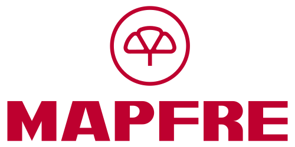
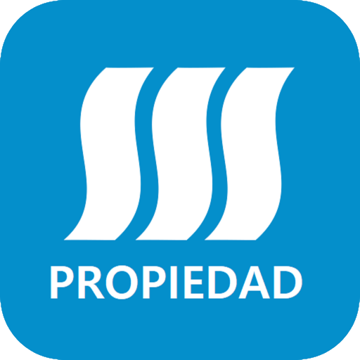
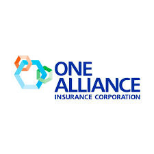
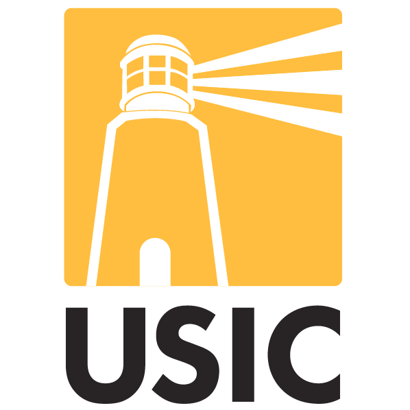

En Desarrollos Industriales LLC te orientamos durante el proceso de reclamación por daños de fuego, humo, hollín, inundación o moho, y te ayudamos a comunicarte mejor con tu aseguradora.
Cuando ocurre un daño en una propiedad, muchas personas no saben qué decir, qué documentos enviar, cómo describir el daño o qué hacer antes de aceptar una oferta. Nuestro equipo puede asistirte para que tengas una orientación clara antes, durante o después de la llamada con tu aseguradora.
Te acompañamos paso a paso para que la comunicación con tu aseguradora sea más clara y organizada. La asistencia inicial es por teléfono o WhatsApp.
Te explicamos qué pasos seguir según el tipo de daño y el estado actual de tu reclamación.
Evaluamos contigo si el daño es por fuego, humo, hollín, inundación, agua o moho — y qué información necesitas reunir.
Te decimos qué fotografiar, cómo enviar la evidencia y cómo presentarla de forma ordenada.
Te ayudamos a entender qué sigue con tu aseguradora y qué expectativas son razonables en cada etapa.
Coordinamos una visita técnica a tu propiedad para documentar los daños con detalle.
Si lo necesitas, ejecutamos la restauración completa con personal licenciado y equipos profesionales.
Respondemos rápido y de forma directa, sin tecnicismos innecesarios.
Una segunda opinión puede ayudarte a tomar una mejor decisión con la información disponible.
Podemos orientarte en procesos de reclamación relacionados con distintas compañías de seguros en Puerto Rico. Si tu aseguradora no aparece en esta lista, también puedes comunicarte con nosotros para recibir orientación.

Reclamaciones por teléfono
Reclamaciones por teléfono

Reclamaciones por teléfono

Reclamaciones por teléfono
Reclamaciones por teléfono

Reclamaciones por teléfono
Si tu aseguradora no está en la lista, también podemos orientarte.
Desarrollos Industriales LLC no es representante oficial ni socio oficial de las compañías aseguradoras mencionadas. Brindamos asistencia y orientación independiente al asegurado.